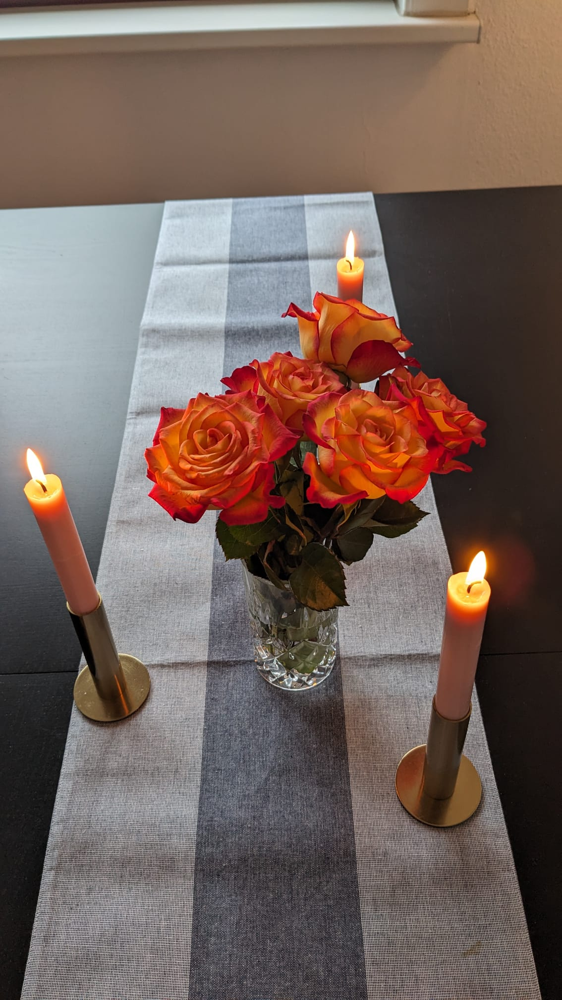

Amor ❤ Esperanza
¡Para ti!

Tus flores siguen estando preciosas, como tú.
Puse algunos alrededor de algunas velas, porque creo que se merecen
por lo que tienen algunas luces de bight para los últimos días que tienen.

Las luces también representan cosas que son importantes en mi vida, que me apoyan.
Uno es para mi familia, mi hermano y mi madre.
Una es para unos queridos amigos que me preguntan cómo estoy.
La última vela, pero la más brillante, es para ti.
A veces desapareces por un tiempo.
Me siento un poco sola y temo que no vuelvas a iluminar.

Pero siempre volvías,
y cada vez parecías más fuerte y más hermosa.
Me hace muy feliz que desempeñes un papel importante en mi vida.

También tienes velas en tu vida, que te dan apoyo,
que te quieren, que te dan fuerza.
Tu familia, tu madre, tu hermano, tu hermana.
Tú los cuidas con amor y ellos lo hacen por ti.
Tus amigos, a los que conoces desde hace tiempo. Que salen contigo,
que te animan. Con quien compartes cosas como con nadie más.
Una vela está oscura. Es la vela que te hizo daño en el pasado.
La vela que, por un breve momento, fui yo. Me encantaría volver a ser esa vela,
algún día. Cuando estés listo para encenderlo de nuevo. Fui egoísta cuando te pedí
para llevarme de vuelta, así no es como funciona esto.
No podemos cambiar nuestro pasado, pero podemos forjar nuestro futuro.
Nadie puede cambiar lo que te pasó antes de conocernos,
pero tal vez algún día pueda estar ahí para ti, amarte y ser amado por ti.
Para que pueda ser fuerte para ti, para que puedas empezar a sanar.